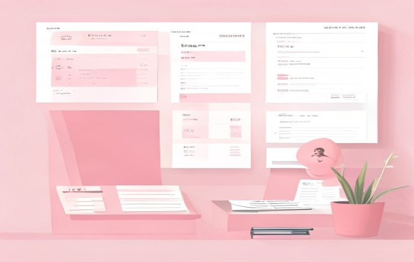
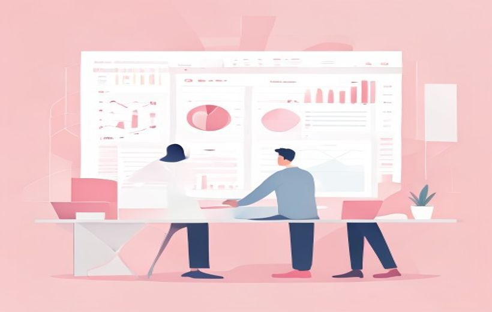

Cómo se organiza el día a día de un plan de redes sociales orgánico: calendarizar, publicar y medir para mejorar en el siguiente ciclo.
De la idea a la campaña: planificar, publicar y medir.
Una campaña orgánica no es "publicar y rezar" — es un ciclo de planificar, publicar, medir y ajustar, apoyado en un calendario editorial, pilares de contenido claros y un reporting periódico que convierte los datos en decisiones reales.
🧠 Los conceptos
Despliega cada tarjeta, léela con calma y márcala como entendida. La barra de arriba irá subiendo.
El calendario editorial es el documento central de cualquier plan de social media. Dice qué vas a publicar, en qué canal, cuándo y con qué objetivo — todo planificado con antelación (semana, mes o trimestre). Sin él, cada día empiezas de cero preguntándote «¿qué publico hoy?».

El calendario editorial organiza qué se publica y cuándo.
| Campo | Para qué sirve |
|---|---|
| Fecha y hora | Programar en el momento de mayor audiencia |
| Plataforma | Saber en qué red va (IG, TikTok, LinkedIn…) |
| Formato | Reel, carrusel, story, vídeo largo, post estático… |
| Pilar temático | A qué eje de contenido pertenece |
| Objetivo / KPI | Qué métrica principal quieres mover |
| Copy + creatividad | El texto y el enlace al diseño o vídeo |
| CTA | Qué acción le pides al usuario (guardar, comentar…) |
| Hashtags | Etiquetas para ampliar el alcance |
| Responsable | Quién aprueba y quién publica |
Los pilares de contenido son entre 3 y 5 categorías temáticas que se publican en rotación. Definen de qué va a hablar la marca en redes. Sin pilares, el contenido es inconsistente y la audiencia no sabe qué esperar de ti.
| Pilar | Qué publicas | Ejemplo |
|---|---|---|
| Producto | Lo que vendes, lanzamientos, beneficios | Foto de nueva colección |
| Educativo | Tutoriales, tips, guías de uso | Reel «Cómo hacer X en 3 pasos» |
| Cultura | Equipo, valores, behind the scenes | Story del día a día en la empresa |
| Comunidad | UGC, testimonios, casos de clientes | Repost de un cliente satisfecho |
| Entretenimiento | Humor, memes, retos virales | Trending audio de TikTok con el producto |
| Inspiracional | Frases, misión, propósito de marca | Cita con el valor de la marca |
Mix orientativo: 30% producto · 40% educativo/entretenimiento · 20% comunidad · 10% inspiracional.
Publicar a la hora correcta puede doblar el alcance del mismo contenido. Cada plataforma tiene sus propios ventanas horarias y frecuencias recomendadas — aunque siempre debes ajustarlas a los datos de tu audiencia concreta.
| Plataforma | Frecuencia recomendada | Mejor horario (España) | KPI clave |
|---|---|---|---|
| 3-5 posts/sem + 5-7 stories/día | L-V 18:00-21:00 | Comentarios, guardados | |
| TikTok | 2-3 vídeos/día | L-J 19:00-22:00 | Visualizaciones, réplicas |
| 3-5 posts/semana | L-V 08:00-10:00 | CTR, respuestas de valor | |
| X (Twitter) | 3-10 tweets/día | L-V 12:00-14:00 | Clics a recursos, menciones |
| 1 post/día | L-V 12:00-14:00 | Alcance, reacciones | |
| YouTube | 1 vídeo/semana | J-V por la tarde | Watch time, suscriptores |
El formato es la forma en que empaquetas tu mensaje. El mismo mensaje convertido en Reel, carrusel o texto plano puede tener resultados radicalmente distintos. Adaptar el formato al canal y al objetivo es parte de la estrategia.
| Formato | Canal ideal | Para qué sirve |
|---|---|---|
| Reel / TikTok | IG, TikTok | Alcance, viralidad, tutoriales rápidos |
| Carrusel | IG, LinkedIn | Educar, guías paso a paso, guardados |
| Story | IG, Facebook | Conexión diaria, encuestas, CTAs directos |
| Post estático | IG, Facebook | Comunidad, frases, anuncios puntuales |
| Live / AMA | IG, YouTube, TikTok | Co-crear valor, detectar barreras, confianza |
| Vídeo largo | YouTube, LinkedIn | Profundidad, casos de estudio, autoridad |
| Texto + link | LinkedIn, X | Pensamiento, debate, tráfico web |
Monitorizar no es solo ver cuántos likes tienes. Es decodificar las señales del ecosistema para entender qué funciona, qué no y por qué. Hay tres niveles de frecuencia:
| Nivel | Frecuencia | Qué haces | Tipo de acción |
|---|---|---|---|
| Daily check | Cada día (2 min) | Comentarios, DMs, picos raros | Reactiva |
| Weekly review | Cada semana (15-30 min) | Top y bottom posts, ajustes tácticos | Táctica |
| Monthly report | Cada mes (1-2 horas) | Dashboard completo vs KPIs, decisiones estratégicas | Estratégica |
Más allá de las vanity metrics: Los comentarios con evidencia (que demuestran aprendizaje o réplica) valen más que mil clics vacíos. La crítica o resistencia de la comunidad también es un dato valioso.
El informe mensual (o monthly report) es el documento que recoge todo lo que ha pasado en el mes, lo compara con los objetivos marcados y propone los próximos pasos. Es la pieza clave del ciclo de mejora continua.

Monitorizar y reportar para mejorar la siguiente campaña.
| # | Sección | Contenido |
|---|---|---|
| 1 | Resumen ejecutivo | 3 hallazgos + 3 recomendaciones para la dirección |
| 2 | Audiencia | Crecimiento de seguidores, demografía, cambios |
| 3 | Contenido | Top 5 publicaciones y análisis del por qué funcionaron |
| 4 | Engagement | Evolución de métricas vs benchmark del mes anterior |
| 5 | Conversión | Tráfico web, leads y ventas atribuidos a social |
| 6 | Aprendizajes | Qué se probó, qué funcionó y qué no |
| 7 | Próximos pasos | Plan del mes siguiente con los ajustes decididos |
Un plan de social media nunca es fijo. Se construye en bucle siguiendo el ciclo PDCA (Plan → Do → Check → Act), también llamado ciclo de Deming. Cada vuelta del ciclo mejora el plan con datos reales.
| Fase | En social media | Qué produce |
|---|---|---|
| Plan (Planificar) | Diseñar el calendario editorial del mes | Publicaciones programadas con objetivos claros |
| Do (Ejecutar) | Publicar según el calendario | Contenido real en las redes |
| Check (Medir) | Daily + weekly + monthly review | Datos de lo que funcionó y lo que no |
| Act (Ajustar) | Cambiar pilares, horarios, formatos, frecuencia | Nuevo plan mejorado con datos |
Qué ajustar cada mes: mix de pilares · frecuencia por canal · horarios según actividad real · formatos (vídeo vs foto, carrusel vs single) · hashtags (rotar para no estancarse).
En una estrategia real, las acciones orgánicas de branding (reputación, confianza, valores) y las de performance (captación de leads, ventas medibles) no son enemigas — conviven y se complementan.
| Enfoque | Objetivo | Trabaja sobre | Plazo |
|---|---|---|---|
| Branding orgánico | Reputación, preferencia de marca | Memoria, confianza, valores | Largo plazo |
| Performance | Leads, conversiones, ventas | Resultados medibles a corto plazo | Corto-medio plazo |
Una serie de posts sobre sostenibilidad (branding) puede convivir con una campaña pagada de captación de leads (performance) dentro del mismo mes. La planificación eficaz integra los dos enfoques.
Más allá del calendario y las métricas, un plan orgánico profesional se apoya en una infraestructura de trabajo que evita errores, mantiene la coherencia y permite reaccionar sin caos.
| Práctica | Qué es |
|---|---|
| Brand bible | Documento maestro: voz, tono, colores, do's & don'ts de la marca |
| Banco de assets | Biblioteca centralizada de fotos, vídeos y plantillas listas para usar |
| Flujo de aprobación | Quién valida el contenido antes de publicar (evita errores graves) |
| Protocolo de crisis | Qué hacer si algo se vuelve viral negativamente fuera de horario |
| Contenido evergreen | Posts «de fondo» guardados para publicar cuando algo falla |
| Testing A/B | Probar variaciones de copy, miniatura o formato para mejorar resultados |
| Herramientas | Hootsuite, Metricool, Buffer, Later, Meta Business Suite |
🃏 Flashcards
Toca cada tarjeta para girarla. Tapa la definición con la mano y comprueba si te la sabes.
✅ Test rápido
6 preguntas tipo examen. Elige una opción y te corrige al momento con la explicación.
⭐ Preguntas del final de la presentación
La presentación del Tema 5 no incluye diapositiva de Autoevaluación (la última slide es «Gracias»). Se ofrecen a continuación 3 preguntas de práctica elaboradas a partir de los contenidos clave del tema, etiquetadas como tales.
| Día | Canal | Pilar | Formato | Hora | KPI |
|---|---|---|---|---|---|
| Lunes | Educativo | Carrusel «3 looks sostenibles para esta semana» | 18:00 | Guardados | |
| Martes | TikTok | Entretenimiento | Reel con trending audio + nueva colección | 19:30 | Visualizaciones |
| Miércoles | Comunidad | Story con repost de cliente (UGC) + encuesta | 12:00 | Respuestas | |
| Jueves | TikTok | Educativo | TikTok «Cómo combinar X prendas de forma circular» | 20:00 | Comentarios de réplica |
| Viernes | Producto | Reel lanzamiento nueva pieza + CTA a web | 18:30 | Clics en enlace |